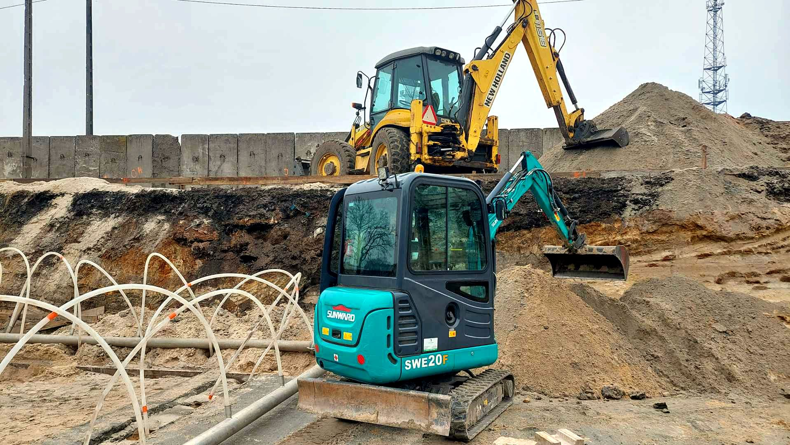

Roboty ziemne
Przygotowanie terenu pod budowę, podjazd lub ogród.
- Niwelacja i wyrównanie działki
- Korytowanie pod kostkę i drogi
- Zasypywanie i zagęszczanie
Od 1997 roku
Roboty ziemne, wykopy i przewóz ziemi. Przyjedziemy, wykopiemy, wyrównamy i wywieziemy urobek.
602 392 337 Zadzwoń
O nas
Działamy nieprzerwanie od 1997 roku na terenie Legionowa i okolic. Przez te lata współpracowaliśmy z wieloma klientami, zarówno indywidualnymi, jak i dużymi firmami.
Każde zlecenie jest dla nas ważne, niezależnie od jego wielkości. Zajmujemy się przede wszystkim pracami ziemnymi: wykopami, równaniem działek i przewozem ziemi. Zadzwoń, opisz, co trzeba zrobić, a ustalimy termin i zakres prac.
Przygotowanie terenu pod budowę, podjazd lub ogród.
Wykopy pod fundamenty i instalacje, z odkładem lub wywozem ziemi.
Wywóz urobku z wykopu i dowóz materiału na plac budowy.

Koparko-ładowarkę wykorzystujemy do cięższych zadań. Dzięki jej wielozadaniowości kończymy pracę szybciej, co pozwala zaoszczędzić czas i pieniądze.

Minikoparkę wykorzystujemy do mniejszych zadań. Ma gumowe gąsienice, więc bez problemu wjeżdża na posesje z kostką brukową. Dzięki małym rozmiarom jest wszechstronna i dojedzie także na już zagospodarowane działki.
Kontakt
Jeśli nie odbieramy, jesteśmy pewnie przy pracy. Oddzwonimy.
Mapa wczytuje się z Google.
Jeśli się nie pojawi, użyj przycisku pod spodem.